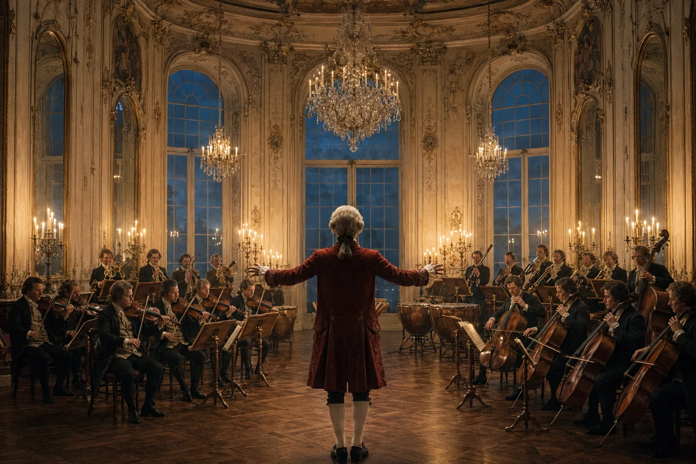
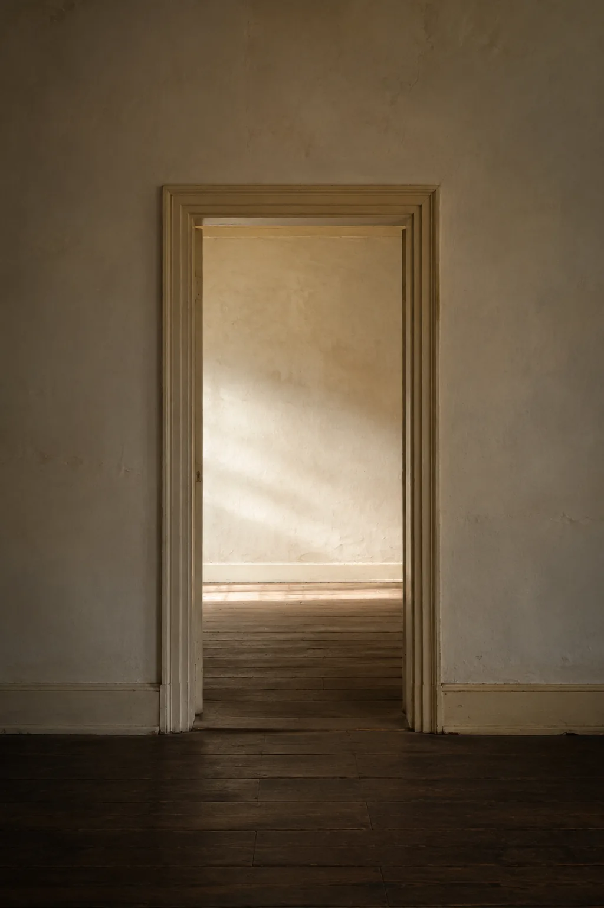
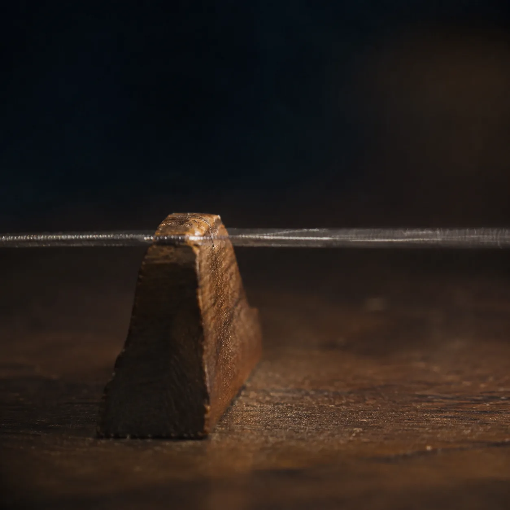
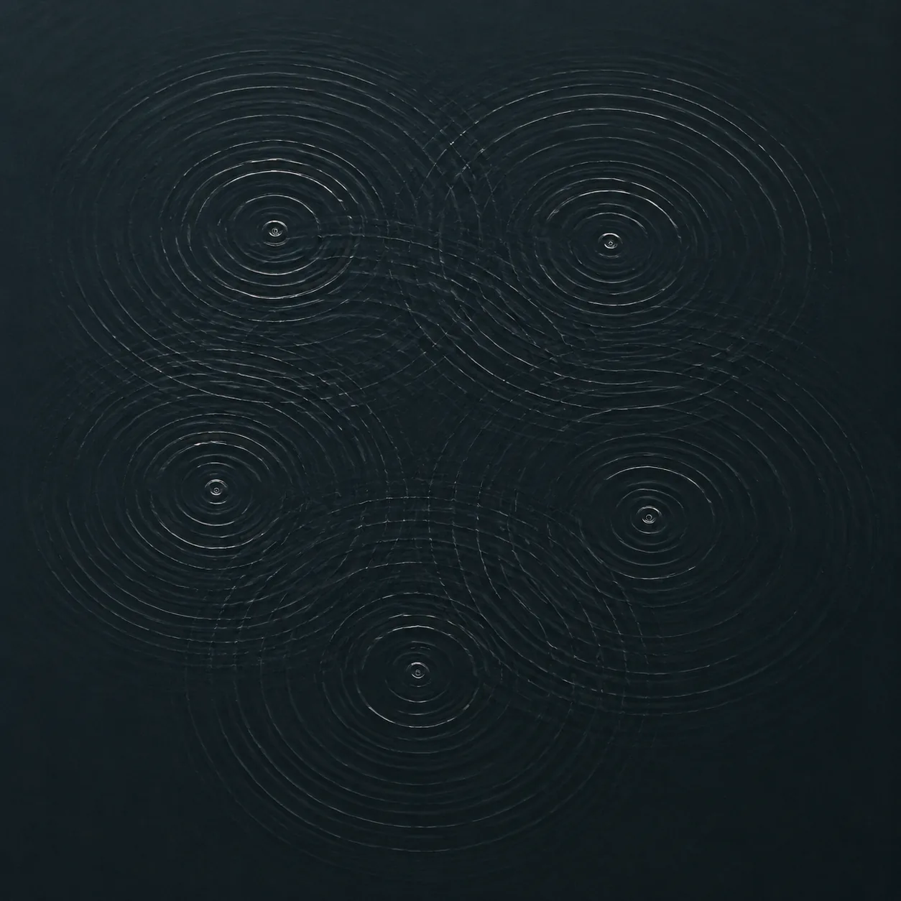
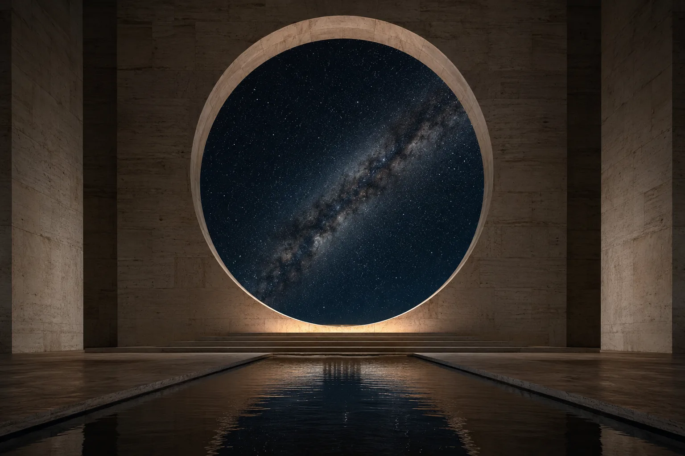
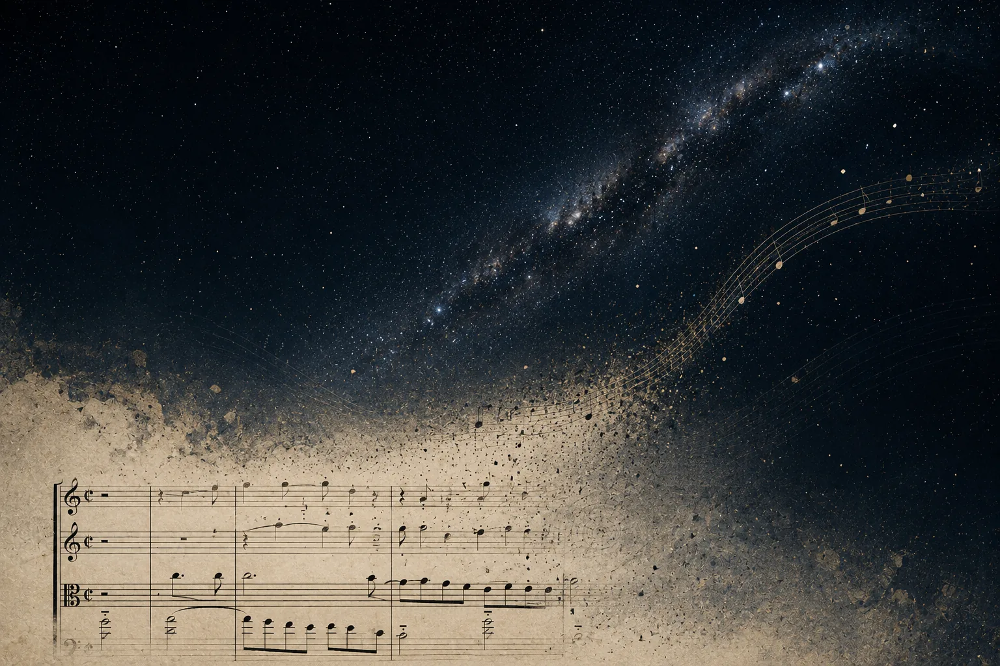

The Art of Giving · Study No. 12 · Wolfgang Amadeus Mozart · 1756 to 1791
Something
in the Air.
Mozart, the physics of a note, and the instrument every one of us was born holding.

Part One
Frith Street.
In June of 1765, a London barrister named Daines Barrington climbed the stairs of a rented house on Frith Street, in Soho, to look into a rumor.
Barrington was the kind of Englishman the eighteenth century produced in quantity: a lawyer by trade, a naturalist by temperament, in time a Fellow of the Royal Society, the man to whom Gilbert White addressed half the letters of The Natural History of Selborne, and a man who argued in print, against the evidence, that swallows do not migrate but sleep the winter away. He was curious about everything and suspicious of most of it. And what he had heard, from people he did not entirely trust, was that a German boy of nine, the son of a court musician from Salzburg, could do things at a harpsichord that grown men who had spent their lives at the instrument could not do.
So he brought a test. He had in his pocket a duet in manuscript, written by an English gentleman to words from an opera by Metastasio. It had never been published. It had never been copied. There was no possibility that the boy had seen it. Barrington set it on the music desk, the child sat down, and, in Barrington’s dry account to the Royal Society, the boy played the score at sight while singing the upper part, his father taking the lower. And here is the detail Barrington could not get over. The father made mistakes. Once or twice Leopold Mozart lost his place in a passage no harder than the one his son was playing, and the son turned around, annoyed, pointed at the error, and set him right.
Barrington asked for more. Could the boy improvise a love song in the manner of Manzuoli, the great castrato then singing in London? He could, and he built a recitative to set it up. A song of rage? He worked himself into such a state that he beat the keys like a person possessed and half rose out of his chair. Then a cat wandered into the room, and the boy left the harpsichord to chase it, and nobody could get him back for some time. He also, Barrington noted, liked to gallop around the room with a stick between his legs for a horse.
Barrington did not believe the age. Nobody did. Leopold, who was not above shaving a year off for the handbills, had every reason to lie. So Barrington did what a lawyer does. He sent for the evidence. It took some years, but he eventually obtained a certified extract from the register of Salzburg Cathedral, and it said what Leopold had said. Joannes Chrysostomus Wolfgangus Theophilus Mozart, born the 27th of January, 1756.
Now. The thing everyone remembers about that afternoon is the playing. That is the wrong thing to remember.
The right thing is a story told twenty seven years later by a Salzburg court trumpeter named Johann Andreas Schachtner. Schachtner was a family friend, the sort of uncle who is always around, and after Mozart died his sister Nannerl asked him to write down what he remembered of the boy. He remembered three things. He remembered that at four or five the child was found at a table, pen dipped too deep, page covered in blots, insisting he was writing a concerto, and that Leopold laughed until he read the notes under the blots and then stood there with tears in his eyes. He remembered that a trumpet, blown alone in a room, terrified the boy so badly he went white and started to collapse, as though someone had leveled a loaded pistol at his heart. And he remembered a violin.
Schachtner owned a violin the boy loved for the softness of its tone. He called it the butter fiddle. One day, when the boy was about seven and playing his own small violin, he asked after the butter fiddle, and then said, in effect: Herr Schachtner, your violin is tuned half a quarter tone lower than mine, if you have left it the way it was the last time I played it. Schachtner laughed. Then he checked. Leopold checked. The violin was tuned half a quarter tone flat.
Half a quarter tone. An eighth of a whole step. A gap so small that on a modern piano it does not exist. And the boy had not compared the two instruments side by side. He had carried the pitch of a violin around in his head for days, the way you carry the color of a friend’s front door, and noticed when the world came back a hair lower than he had left it.
What was in the boy?
That is the question everyone has been asking for two hundred and sixty years, and there are two fashionable answers. The first is a number. In 1926 a psychologist named Catharine Cox, working under Lewis Terman at Stanford, tried to estimate the IQs of three hundred dead geniuses from the records of their childhoods, a procedure roughly as rigorous as reading tea leaves, and put Mozart somewhere around 150. The second answer is the opposite of a number. It says there was nothing in the boy at all except time: that the early pieces were mostly arrangements, that Leopold’s hand is all over them, and that the first work any honest person would call a masterpiece, the piano concerto in E flat known as the Jeunehomme, arrived in 1777, when the composer was twenty one and had a decade at the keyboard behind him. Mozart, on this account, is not a miracle. He is a schedule.
I want to suggest that both answers make the same mistake. They look at the boy. I want to look at the room.
Because here is what else was on Frith Street that afternoon, unremarked, the way the most important things always are. There was air. And there were two ears. And the physics of what happened in the few feet between the harpsichord’s strings and the child’s cochlea is, once you look at it, a great deal stranger than anything the child did.
Part Two
What a Note Is.
Start with the A above middle C, the note an orchestra tunes to. Today we fix it at 440 vibrations a second. What does that mean, physically?
It means that a string is snapping back and forth 440 times a second, and each time it moves toward you it shoves the air in front of it into a slightly denser packet, and each time it moves away it leaves behind a slightly thinner one. That packet does not travel. This is the first thing to understand about sound, and it is counterintuitive: the air does not go anywhere. The molecules next to the string bump the molecules next to them, which bump the next, and what moves across the room is not the air but the bump. Sound is a rumor. It passes from molecule to molecule, and nobody involved goes more than a few millionths of an inch from home.
How many molecules? A single cubic centimeter of the air in the room you are sitting in, a sugar cube’s worth, holds about twenty five quintillion of them. Twenty five followed by eighteen zeros. Each one is moving at roughly five hundred meters a second, half a kilometer every second, and colliding with a neighbor several billion times each second, so that the average molecule travels less than a tenth of a micron before it hits something. This is the medium. It is not empty. It is the most crowded room you have ever been in, and it is also the reason you can hear.
A rumor cannot travel faster than the people carrying it. This is why the speed of sound is what it is. In air at room temperature the bump moves at 343 meters a second, about 767 miles an hour, and if you want to know where that number comes from, it is the square root of a ratio: the stiffness of the gas divided by its density, or, in the form a physicist would write it, the square root of γRT over M, where γ is a constant fixed by the kind of molecule (1.4 for the nitrogen and oxygen that make up almost all of air), R is the gas constant, T the absolute temperature, and M the mass of a mole of the stuff. Run the numbers for air at twenty degrees Celsius and you get 343. Notice what is in that formula and what is not. Temperature is in it, so sound goes faster on a warm day and slower on a cold one: 331 meters a second at freezing. The mass of the molecule is in it, which is why sound in helium, whose atoms are seven times lighter than air’s molecules and correspondingly quicker, moves at about a thousand meters a second. And the frequency of the note is not in it. Hold on to that. It will turn out to be the whole story.
If the bump moves at 343 meters a second, and the string makes 440 bumps a second, then the bumps are spaced 343 divided by 440 apart. That is 78 centimeters, a bit under thirty one inches. The A above middle C, as it moves through a room, is a train of pressure ridges each about the width of a doorway. Every note has a length. Go up an octave and the string vibrates twice as fast, the ridges come twice as often, and the note is half as long. This is the sequence Mozart lived inside, and it is worth writing out, because people who think of an octave as a musical idea are sometimes surprised to learn it is also a physical object with a size.

And beyond the piano, at the edges of what a human can hear at all: 20 Hz, a wave seventeen meters long, the height of a five story building; 20,000 Hz, a wave seventeen millimeters long, a little wider than a fingernail. Everything a human being has ever heard lives between a building and a fingernail. Everything Mozart wrote lives between a bus and a hand.
The period of the note, the time between one ridge and the next, is just the reciprocal. A4 arrives every 2.27 thousandths of a second; the low A of the piano every 36 thousandths; the top C every 0.24 thousandths. Now put those numbers in a concert hall. Say the back row is thirty meters from the stage, which is modest. Sound takes 87 thousandths of a second to get there. In that time the A string has completed thirty eight full cycles. So when the back row hears the first pulse of a note, the front row is already hearing its thirty ninth, and the whole hall, from the stage to the wall, is filled with a standing train of thirty eight identical ridges of air, each one a doorway wide, moving as a body at 767 miles an hour. Nobody in the room experiences it that way. That is the point. The experience is a note. The physics is a freight train.
One more number, because it is the one that should stop you. Atmospheric pressure at sea level is about 101,325 pascals. The faintest sound a healthy young ear can detect, the threshold of hearing, is a ripple of twenty millionths of one pascal on top of that. Twenty micropascals. That is two parts in ten billion. A whisper is a wobble in the air pressure of the room so small that if the atmosphere were a mountain, the whisper would be a single grain of sand set on the summit and lifted off again, hundreds of times a second. Normal conversation is about a thousand times bigger than that ripple. A full orchestra at its loudest is about a hundred thousand times bigger. The threshold of pain is a million times bigger. And a million times twenty micropascals is twenty pascals, which is still two hundredths of one percent of the pressure the air was already exerting on your eardrum before anyone played anything. The entire dynamic range of Western music, from the last dying chord of a Mozart slow movement to the full brass at the end of the Jupiter, happens inside a ripple that never disturbs the atmosphere by more than one part in five thousand.
The air is doing almost nothing. And it is doing it twenty five quintillion molecules at a time.
The experience is a note. The physics is a freight train.
Part Three
The Ratio.
There is a story about Pythagoras that every music student hears and that is almost certainly false. He is walking past a blacksmith’s shop. He hears the hammers. Some pairs of hammers, struck together, make a pleasing sound and others do not, and when he goes in and weighs them he finds that the pleasing pairs have weights in simple ratios: two to one, three to two, four to three. The story is charming, and its physics is wrong. A hammer’s pitch does not go with its weight that way. But the ratios are right, and they are right for strings, and it does not matter who found them. Take a string, stop it exactly at its midpoint, and the half string sounds a note exactly an octave above the whole. Stop it at one third, and the remaining two thirds sound a fifth above. At one quarter, a fourth. The pleasing intervals are small whole numbers. This is arguably the first quantitative law of nature anyone ever wrote down, and it was written down about music.

Why should small whole numbers sound good? Because a string does not vibrate at one frequency. It vibrates at all of them at once. Pluck the A at 440 and the string is also, at the same moment, folding itself in half and vibrating at 880, and in thirds at 1,320, and in quarters at 1,760, and so on up, each of these overtones fainter than the last. This is the harmonic series, and its first few members, taken as ratios, are the entire vocabulary of harmony: 2 to 1 is the octave, 3 to 2 the fifth, 4 to 3 the fourth, 5 to 4 the major third, 6 to 5 the minor third. When you play two notes whose fundamentals stand in one of these ratios, their overtone ladders line up. Rungs coincide. When the ratio is ugly, the rungs miss each other by a little and beat against one another, a rapid wobble the ear registers as roughness. Hermann von Helmholtz worked this out in 1863, and it means something that is easy to say and hard to absorb. Consonance is not a taste. It is arithmetic. The reason an octave sounds like the same note, higher, is that every overtone of the upper note is already present in the lower one. The upper note adds nothing new. It simply agrees.
Now here is where it gets interesting, because the arithmetic does not close.
Start on any note and go up by fifths, the purest interval after the octave, multiplying by three halves each time. Do it twelve times, which brings you around the circle of fifths and back to the letter you started on: C, G, D, A, E, B, F sharp, C sharp, G sharp, D sharp, A sharp, F, C. Twelve fifths should equal seven octaves. Three halves to the twelfth power should equal two to the seventh. It does not. Three halves to the twelfth is 129.746. Two to the seventh is 128. The ratio between them, 531,441 over 524,288, is about 1.0136. Twelve perfect fifths overshoot seven perfect octaves by 1.36 percent, which in the units musicians use is about twenty three and a half cents, roughly a quarter of a semitone. It is called the Pythagorean comma. The circle of fifths is not a circle. It is a spiral that misses its own starting point, and it misses by a fixed, exact, unarguable amount, because three to any power is odd and two to any power is even and no power of three will ever equal a power of two. The universe, at the level of ratios, refuses to let the keyboard be perfect.
Every tuning system in history is a decision about where to hide the comma. You can dump it all in one place, one howling fifth nobody plays, the so called wolf. You can spread it thinly across a few keys and leave the others pure, which is what the well temperaments of Bach’s time did, so that each key had its own slight color. Or you can do what we do now and spread it perfectly evenly across all twelve, so that every semitone is the same ratio: the twelfth root of two, 1.059463. Multiply 440 by that number twelve times and you land on exactly 880. The fifth is no longer three to two; it is two to the seven twelfths, or 1.49831, flat of pure by two cents, an error no human can hear. The major third is two to the four twelfths, 1.25992, sharp of the pure five to four by fourteen cents, which a careful ear can hear as a faint shimmer of beating in every major chord ever played on a modern piano. Equal temperament is a rounding error, agreed upon. It is the reason a piano can play in any key and the reason it plays in none of them perfectly.
Mozart did not live in that world. It is worth pausing on this. In 1756, the year the boy was born, his father published a treatise on violin playing that became the standard manual in the German speaking world for half a century, and in it Leopold teaches, as a plain matter of fact, that the flats are higher than the sharps: that D flat sits a little above C sharp, not on top of it. On a violin there are no keys, only fingers, and Leopold’s fingers knew things a piano cannot. Thirty years later, when the English composer Thomas Attwood came to Vienna to study with Wolfgang, Attwood kept his exercise books, and they survive, and in them Mozart is teaching a scale in which D sharp and E flat are different notes. He heard the comma. He put it in his students.
And his A was not our A. A tuning fork from the Vienna of Mozart’s day, one long associated with his name, sounds at about 421.6 vibrations a second, roughly three quarters of a semitone below modern concert pitch. Every performance of Mozart you have ever heard on modern instruments is slightly higher than he heard it, and every one is tuned to a compromise he never accepted. The music survives this, which tells you something about the music. But I think it tells you something about the design too. The numbers are exact. The ratios are as clean as anything in mathematics. And they fail to close by exactly the amount that turns tuning from a calculation into a judgment. There is a gap the width of a comma built into the fabric of sound, and the gap is where the musician lives.
Part Four
The Instrument You Were Born Holding.
Everything so far has been outside the head. Now come inside, because the ear is the part of this story nobody thinks about, and it is the part that should make you sit down.
Begin at the outer ear, the pinna, the flap. Its folds are not decoration. They are a filter. Sound coming from above you bounces off them differently than sound from below, and your brain has learned the difference, which is why you can close your eyes and point at a bird. Then the canal, a tube about two and a half centimeters long, closed at the far end by the eardrum. A tube closed at one end resonates most strongly at the frequency whose wavelength is four times its length, and 343 meters a second divided by four times 2.5 centimeters is about 3,400 cycles a second. Measure a real ear and you find its resonance sits a little lower, somewhere between 2,500 and 3,500 Hz, boosting sound in that band by ten to fifteen decibels for free, and that band happens to be where the consonants of human speech live, the s and t and k that carry the meaning of words, and where a baby’s cry does its most piercing work. The ear is loudest at exactly the frequencies where being able to hear was most likely to keep you alive.
The eardrum is a cone of tissue about a tenth of a millimeter thick, thinner than a sheet of paper. At the threshold of hearing, that twenty micropascal whisper, it moves back and forth by about ten trillionths of a meter. The diameter of a hydrogen atom is about a hundred trillionths. Your eardrum can detect a motion a tenth the width of the smallest atom there is, and it does this while sitting in a skull that is also breathing, chewing, and pumping blood.
Behind it, three bones. The hammer, the anvil, and the stirrup, which is the smallest bone in the human body: about three millimeters long and about three milligrams in weight, a bone you could lose in a grain of rice. These three bones are solving a problem the eardrum cannot solve alone. The inner ear is filled with fluid, and fluid is several thousand times harder to push than air. Send a sound wave straight from air into water and 99.9 percent of its energy bounces off the surface, which is why the world goes quiet when you duck under in a swimming pool. The ear beats this with a hydraulic press. The eardrum has an area of about fifty five square millimeters. The footplate of the stirrup, where it presses on the fluid, has an area of about three. The bones gather the force from the big membrane and concentrate it on the little window, seventeen to one, the lever action of the bones adds another factor of about 1.3, and the total is a pressure gain of roughly twenty two fold, about twenty seven decibels, which is almost exactly the amount that would otherwise have been lost at the surface. The middle ear is an impedance transformer. Electrical engineers build these on purpose. Yours came installed.
Then the cochlea. It is the size of a pea, coiled two and a half turns, and if you could unroll it, it would be about thirty five millimeters long. Running down its center is a strip of tissue called the basilar membrane, and this membrane is graded: narrow and stiff at the entrance, wide and floppy at the far end. A stiff thing resonates high; a floppy thing resonates low. So when a sound enters, a wave travels along the membrane and grows until it reaches the place whose stiffness matches its frequency, and there it peaks and collapses, and the hair cells at that spot fire. High notes peak near the entrance. Low notes travel all the way to the tip. The cochlea is a keyboard laid out in flesh, twenty thousand cycles at one end and twenty at the other, and Georg von Békésy got the Nobel Prize in 1961 for watching the wave move.
Here is the fact that explains the piano. The map is logarithmic. Move along the membrane by about five millimeters, across most of its length, and the frequency of the place you are standing on doubles. Five millimeters is an octave. Every octave, whether it runs from 55 to 110 or from 1,760 to 3,520, takes up about the same amount of room in your head. That is why a piano keyboard, whose keys are spaced evenly, is actually a geometric sequence in disguise, each key 5.9 percent higher than the last. It is why we perceive pitch as a ladder of equal steps when the physical frequencies are exploding upward. And it is why the octave at the bottom of the piano, a mere 27.5 cycles of difference, feels the same size as the octave at the top, which spans more than two thousand. Your ear does not measure differences. It measures ratios. It is a slide rule made of cells, and Mozart’s whole art was written on it.
How fine is the ruler? A trained listener at a thousand cycles can tell two tones apart that differ by about a fifth of one percent, three or four cents, well under a tenth of a semitone. Which means the boy’s half quarter tone, twenty five cents, was not a feat of resolution. Any good ear can resolve that, side by side. The feat was memory. He was not comparing two violins. He was comparing a violin to a recollection, and the recollection was accurate to an eighth of a step after several days. That capacity has a name, absolute pitch, and it is rare, about one person in ten thousand in the West by the usual estimate, and the research on it is one of the stranger corners of psychology. It is far more common among speakers of tonal languages like Mandarin, where pitch carries meaning. And it seems to depend on a window: children who begin serious musical training before about the age of six acquire it at rates many times higher than those who start later, and after that the window closes. Mozart began at three, watching his sister’s lessons, and was playing pieces by four. Whatever was in the boy, it was put there inside the window. The ear was built to be programmed early, and his was.
Five years after Frith Street the ear did something bigger. In April of 1770, in Rome, in Holy Week, Leopold took the fourteen year old to the Sistine Chapel to hear Gregorio Allegri’s Miserere, a setting of the fifty first psalm for two choirs, nine voices in all, that the papal choir had sung there every year for more than a century and that the Vatican guarded jealously: it was not to be copied, and it was not to be sung anywhere else. The boy heard it once, on the Wednesday. He went home and wrote it out. On Good Friday he went back to hear it again and made a few corrections, and Leopold, in a letter home that week, reported the whole thing with a slightly nervous pride and asked that the news not get around. It got around. That is nine independent lines, held in memory from a single hearing, in a stone room that rings for seconds after every chord, at fourteen. And it is worth being precise about what the feat was. It was not, in the first instance, a feat of cleverness. It was a feat of the instrument: of a cochlea that had sorted nine voices out of one pressure wave, and a memory that had kept them sorted.
Deeper still, the hair cells. There are about three and a half thousand inner hair cells in each cochlea, and these are the microphones: each carries a tuft of fine stalks, and when the membrane moves, the stalks tilt, and a tilt of about a third of a billionth of a meter, again the width of an atom, is enough to open a channel and send a signal up the nerve. But there are also about twelve thousand outer hair cells, and for most of the twentieth century nobody knew what they were for. They are motors. When the membrane vibrates, they change their length in time with it, hundreds or thousands of times a second, pumping energy back into the wave and sharpening it, amplifying the faintest sounds by up to a thousandfold before the inner cells ever hear them. The ear is not a passive microphone. It is a microphone with a servo attached, and the proof is a discovery made in 1978 that still sounds like a joke: the healthy ear emits sound. Put a sensitive microphone in the canal of a newborn and you can record a faint tone coming out of the head, the byproduct of the motors running. Hospitals now use it to screen infants for hearing before they can tell you anything. The ear sings a little, to itself, in order to hear.
Two more numbers, and then the composer.
The first is range. The loudest sound you can stand carries about a trillion times the energy of the faintest you can detect. A trillion to one. No instrument humans build works across twelve orders of magnitude without switching scales. Your ear does it continuously, and it does it by taking the logarithm, which is why the decibel scale exists and why a sound ten times as powerful only seems about twice as loud.
The second is time. Your two ears are about twenty centimeters apart, and a sound from the side reaches one before the other by at most six ten thousandths of a second. The brain uses that gap to locate the sound. It can detect a gap of about ten millionths of a second. Now consider that a single nerve impulse, the basic tick of the brain’s clock, lasts about a thousandth of a second, a hundred times longer than the interval being measured. The brainstem gets around this with a piece of engineering called a coincidence detector, a bank of neurons fed by delay lines of different lengths, so that only the neuron whose delay exactly cancels the gap fires. Lloyd Jeffress proposed the design in 1948, before anyone had found it, and then it was found. Hearing is the fastest thing the brain does. You react to a sound tens of milliseconds sooner than to a flash.
And one comparison, because it puts the whole apparatus in proportion. The human eye sees light from about 400 to about 790 trillion cycles a second. That is not quite a factor of two. Vision spans less than one octave. Hearing spans ten. If your eyes had the reach of your ears, you would see from the edge of the microwaves to the X rays, and a rainbow would be a thousand colors wide. We are, by an enormous margin, creatures of the ear. We just don’t notice, because the eye is where the attention goes.
Here is what the ear does with all of this. It takes any sound, however complicated, and breaks it into pure tones. A note from a clarinet arrives as a single wobbling pressure, and by the time it has traveled the basilar membrane it has been sorted into its fundamental and each of its overtones, each one peaking at its own place, each one reported separately up the nerve. The mathematics of this, the fact that any wave can be decomposed into a sum of pure sines, was worked out by Joseph Fourier in a treatise on heat published in 1822. Fourier was born in 1768. Mozart was twelve. The physicist Georg Ohm proposed in 1843 that the ear performs Fourier’s analysis on its own, and Helmholtz proved it twenty years later. Which means that when Mozart, in October of 1791, two months before he died, finished the clarinet concerto for his friend Anton Stadler, he was writing for a spectrum analyzer nobody had discovered, in a mathematics nobody had invented, and getting it right.
He got it right in a specific way. The clarinet is a cylinder closed at one end, the reed end, and a closed cylinder supports only the odd members of the harmonic series: the fundamental, then three times it, then five times, and so on. The even overtones are missing. Every other rung of the ladder is gone. This is why a clarinet overblows to the twelfth instead of the octave, and it is why the instrument’s low register, the chalumeau, has that hollow, dark, wooden sound that no other instrument in the orchestra has. Mozart wrote the concerto for a basset clarinet, Stadler’s own extended instrument, that reached four semitones lower than a standard one, deeper into that hollow register, and the concerto drops into it again and again. He did not know why it sounded the way it sounded. He knew that it did. His ear had already done the arithmetic and handed him the answer, and he trusted it.
I will mention one last thing about Mozart’s ear, because it is odd. There is a small deformity of the outer ear that carries his name in the medical literature, the so called Mozart ear, a flattening and fusing of the folds. Whether Wolfgang himself had it rests on an engraving printed decades after his death and possibly of his son, and I do not put much weight on it. But I like that the instrument was interesting enough to be worth an argument.
Part Five
Counterpoint Is a Bet on Linearity.
In the summer of 1788, in about six weeks, Mozart wrote his last three symphonies. He kept a catalogue of his own works from 1784 on, a little book in which he entered each piece as he finished it, with the date and the opening bars, and the entries are there: the E flat symphony on the 26th of June, the G minor on the 25th of July, the C major, the one people later called the Jupiter, on the 10th of August. He was thirty two. He was in debt, writing begging letters to a fellow Freemason, and his infant daughter had died at the end of June. There is no record that any of the three was performed in his lifetime, though they may have been.
The finale of the Jupiter ends with a passage that people who study these things still talk about in a lowered voice. Over the course of the movement Mozart has introduced five separate themes, the first of them only four notes long. In the coda he plays all five of them at the same time. Five independent melodies, each one going its own way, each one written so that it can sit above or below any of the others and still make sense, a technique called invertible counterpoint, and for a stretch of about twenty bars they all sound together, in the same air, going into the same ears.
Think about what that requires of the air.

It requires that five different pressure waves can occupy the same cubic meters of a room at the same instant without interfering with one another. Not without overlapping; they overlap completely. Without interacting. Each wave has to pass through the other four as though they were not there, so that what arrives at the eardrum is simply the sum of all five, and the cochlea, which sorts by frequency, can pull them back apart. Physicists call this superposition, and the air has it. At any loudness a human being could survive, air is a linear medium: pressures add, and that is all they do. Only at the very edge of what the air can carry, above about 130 decibels, near the intake of a jet engine, does the medium begin to distort, one wave bending another, the sum no longer the sum. Everything below that, which is everything, is clean.
Counterpoint is a wager on that cleanliness. The composer bets that the air will keep his lines separate and that the ear will find them again, and for a man with five voices in his head in 1788 there was no other bet on offer. Both bets paid. They pay every night, in every hall on earth.
And the air has to keep a second promise, quieter than the first, and it is the one I asked you to hold on to. Every frequency has to travel at the same speed. This is not obvious and it is not true of every medium. Ocean waves, for instance, do not do it: long swells outrun short chop, which is why a distant storm announces itself with long slow rollers days before the weather arrives. A medium in which speed depends on frequency is called dispersive. If air were dispersive at the frequencies of music, a chord would come apart in flight. Play a C major triad on the stage and the high notes would reach the back row before the low ones, and the farther you sat from the stage the more the chord would smear into an arpeggio. Harmony would exist within arm’s reach and dissolve across a room. Air on Earth, at Earth’s pressure and temperature, is not dispersive. Across the entire range a human can hear, the speed of sound is the same to better than a tenth of one percent. The bass and the piccolo arrive together, always, at any distance, and nobody has to think about it.
We now know what a planet looks like where this promise is not kept, because in 2021 a rover named Perseverance landed on Mars carrying two microphones, the first ever to work on another world. Mars has an atmosphere, barely: about six tenths of one percent of Earth’s pressure, and 95 percent carbon dioxide. The carbon dioxide molecule stores energy in a way nitrogen does not, and the result, published in the journal Nature in 2022, is that Mars has two speeds of sound. Below about 240 cycles a second, sound travels at roughly 240 meters a second. Above that, it travels at about 250. A Mozart chord played across a Martian field would arrive dismantled, the treble four percent early and pulling further ahead with every meter. And it would not get far. In that thin air the high frequencies are absorbed so fast that beyond about eight meters they simply vanish. On Mars the top half of an orchestra fades out before it has crossed the length of a bus, and a chord is not a chord.
You could build a planet on which music is impossible. Most of them are. Helium would carry a chord, at three times the speed, but you cannot breathe it. Water carries sound beautifully, at 1,480 meters a second, but the ear’s hydraulic press was built for air, and underwater it fails; we hear through the bones of the skull and cannot tell where anything is coming from. Carbon dioxide pulls chords apart. Vacuum carries nothing. What carries a chord intact across a cathedral, at a pressure gentle enough that a whisper of twenty micropascals still gets through, is a mixture of about four parts nitrogen to one part oxygen at roughly one atmosphere and a comfortable temperature, and that mixture happens, by what I am content to call no accident, to be the one you have to breathe to stay alive.
You could build a planet on which music is impossible. Most of them are.
Part Six
The Silence Upstairs.

Go up. Above the concert hall, above the weather, past the last thin fringe of the atmosphere a few hundred kilometers overhead, the medium runs out.
Near the Earth’s orbit, in the wind that blows off the sun, there are about five protons in a cubic centimeter. Between the stars, about one. In the gaps between galaxies, fewer than one in a cubic meter. Set that against the twenty five quintillion in the sugar cube of air on your desk and you have a difference of nineteen to twenty five orders of magnitude, which is not a smaller crowd but the absence of one. A rumor needs someone to pass it to. In interstellar space a hydrogen atom travels billions of kilometers, on average, before it meets another, and a pressure wave can only exist if its wavelength is much longer than that distance. So in a strict sense space is not silent. It is just that its only possible sounds are longer than the solar system and take thousands of years to pass.
Sometimes they do. In 2003 the Chandra X ray observatory looked at the Perseus cluster, a swarm of galaxies two hundred and fifty million light years away wrapped in a cloud of gas far hotter than the surface of the sun, and found ripples in the gas. Concentric ridges, spreading outward from the black hole at the center, driven by its outbursts the way a drum skin drives the air. They were sound waves. Astronomers measured their spacing and worked out the period: one ridge every ten million years or so. Translated into musical terms, and NASA did translate it, the black hole in Perseus is sounding a B flat, fifty seven octaves below middle C. The universe has a note. It is the lowest ever detected, and a single cycle of it takes longer than the entire time there have been human beings to hear anything at all.
No ear is that patient. Ours are built for a window, twenty cycles a second to twenty thousand, ten octaves out of the fifty seven between us and the black hole, and it is the window in which the things that matter to a human being happen: a footstep, a voice, the crack of a branch, the cry of a child in another room. Everything outside the window is either too slow to be a sound or too fast, and there is a great deal outside the window, and none of it concerns you.
And then the other direction. It is one thing to say that you cannot hear in space because there is no air to carry the sound. It is another to notice what else the air is doing. A person exposed to a vacuum has perhaps ten or fifteen seconds of useful consciousness, and not much more of anything. The medium of sound and the medium of life are the same medium. There is no place in the universe where there is nothing to hear and yet something to breathe, and no place where you could draw a breath and not, in principle, hear a note. This is not a coincidence you can engineer around. It is the same gas.
Speech makes the point sharper still. When you talk, air from your lungs passes between two folds of tissue in the throat that flap open and shut, chopping the breath into pulses, about a hundred and ten times a second for a man, about two hundred and twenty for a woman, and the mouth and the nose shape those pulses into words. A word is breath, interrupted. The Hebrew scriptures have one word, ruach, for breath, for wind, and for spirit, and the Greek has pneuma, and the Latin spiritus, and this is not because the ancients were confused. It is because they were paying attention. The breath that goes into a man in the second chapter of Genesis is the same breath that comes out of him as a word, and the same air that carries the word to another person’s ear. Every sentence you have ever spoken was made of the same nitrogen and oxygen that carried Stadler’s clarinet across a Prague theater in October of 1791.
There is a psalm about this. It is the nineteenth, and its first four verses, in the old translation, go like this:
Psalm 19 · verses 1 to 4 · KJVThe heavens declare the glory of God; and the firmament sheweth his handywork. Day unto day uttereth speech, and night unto night sheweth knowledge. There is no speech nor language, where their voice is not heard. Their line is gone out through all the earth, and their words to the end of the world.
Read it again with the physics in your head. The heavens declare. The heavens have no medium; they are the vacuum; a black hole in Perseus can shout for ten million years and nothing arrives. And yet: their voice is heard. Where? The psalm says where. Through all the earth. Down here, in the one thin shell of the universe where there is air, at the one pressure at which the air is linear and non dispersive and kind to whispers, there is an instrument that turns ten trillionths of a meter of motion into a nerve signal and a nerve signal into a chord. The hearing does not happen upstairs. It happens in a pea sized spiral behind your jaw. The heavens do not declare because they can make a sound. They declare because somebody down here was given an ear.
Part Seven
Coda.
He died in Vienna on the 5th of December, 1791, a little before one in the morning, at thirty five. The Requiem was on the table, and it stopped, in his hand, eight bars into the Lacrimosa. There is an account, from a friend who was there, that on the afternoon before, some singers gathered at the bed and sang through the finished portions with him, the composer taking the alto line, until they reached the Lacrimosa and he put the music down and wept.
I keep coming back to the trumpet. The boy who could hear a violin drift an eighth of a tone over several days was, at the same age, so undone by a single trumpet in a room that he went pale and had to be caught. Schachtner thought it a weakness. I think it was the same thing. An instrument that fine has no way to be that fine only when it is convenient. The ear that carried a pitch around in its memory for days was the ear that could not defend itself against a blast of brass at close range. He was not a boy with an unusual gift and an unusual fear. He was a boy who had been handed the ordinary human instrument and, for reasons nobody will ever fully explain, refused to hold it at arm’s length.
Because that is the thing about the room on Frith Street. Everything I have described here, the twenty five quintillion molecules in the sugar cube, the rumor that moves at 767 miles an hour and cannot outrun its carriers, the doorway wide ridges of an A, the ratios that refuse to close by exactly one comma, the hydraulic press behind the eardrum, the five millimeters per octave, the motors in the cochlea, the coincidence detectors in the brainstem, the ten octaves, the linear air, the non dispersive air, the breathable air, the silence upstairs and the B flat in Perseus, every bit of it was already there before the boy sat down. None of it was his. It was not in the boy. It was in the room, and it is in yours.
He was given precisely what you were given. The same air, the same three bones, the same spiral, the same window from twenty to twenty thousand. He did not have a different instrument. He had the same one, and he took it seriously, and he did not put it down.
We have spent two and a half centuries asking what was in Mozart. The physics answers a different question, and I think it is the better one. The gift was never Mozart. The gift was hearing. There is no speech nor language where their voice is not heard. It turns out that is not a description of the heavens. It is a description of an ear.
